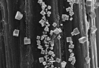
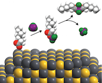
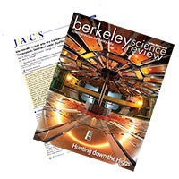
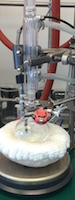
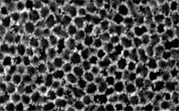
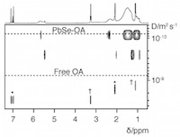

Significant Skills and Accomplishments
Materials Synthesis and Characterization
Skilled in organic, inorganic, and nanocrystal synthesis techniques - including oxygen and moisture-free procedures. Experienced with a wide variety of routine and advanced characterization techniques, including NMR (1D and 2D), X-ray diffraction, and advanced synchrotron techniques.
Electroanalytical Techniques
Several years experience with electroanalytical techniques, including cyclic voltammetry (CV), chronoamperometry (CA), rotating ring-disk electrode experiments (RRDE), electrochemical impedance spectroscopy, and battery cycling (galvanostatic and potentiostatic).
NDSEG Fellow
Recipient of National Defense Science and Engineering Graduate Fellowship (one of only 13 awarded for chemistry students nationwide in 2013)
Developed New Class of Reactions for Manipulating Nanocrystal Surface Chemistry
Solved a long-standing problem in nanocrystal (NC) surface chemistry with a careful mechanistic chemistry approach. By controlling surface stabilization with reversible Lewis acid-base chemistry, ligands could be removed from sensitive NC surfaces while maintaining colloidal dispersibility.
Excellent Written and Oral Communication Skills
Skilled at communicating science through a variety of media and to different audiences. Extensive experience writing technical papers, user proposals, grant/fellowship applications, patent applications, and popular science pieces.
Education
Ph.D. in Physical Chemistry (in progress, started in 2012)
University of California, Berkeley
Co-advised by Dr. Brett A. Helms (LBNL) and Prof. Omar Yaghi (UC Berkeley). Coursework includes Statistical Mechanics, Materials Chemistry, and Surface Properties of Materials.
B.S. in Chemistry with Highest Distinction (2012)
University of North Carolina at Chapel Hill
Advised by Prof. Royce Murray. GPA: 3.92 cumulative, 3.95 chemistry. Coursework includes Electroanalytical Chemistry, Separations, and Mechanisms of Organic and Inorganic Reactions.
Publications
4. Li, C.; Ward, A.L.; Doris, S.E.; Pascal, T.A.; Prendergast, D.; Helms, B.A. “A Polysulfide-Blocking Microporous Polymer Membrane Tailored for Hybrid Li-Sulfur Flow Batteries” Submitted to Nano Lett.
3. Frischmann, P.D.; Gerber, L.C.H.; Doris, S.E.; Tsai, E.Y.; Fan, F.Y.; Qu, X.; Jain, A.; Persson, K.A.; Chiang, Y.-M.; Helms, B.A. “Supramolecular Perylene Bisimide-Polysulfide Gel Networks as Nanostructured Redox Mediators in Lithium-Sulfur Batteries” In preparation.
2. Rosen, E.L.; Gilmore, K.; Sawvel, A.M.; Hammack, A.T.; Doris, S.E.; Aloni, S.; Altoe, V.; Nordlund, D.; Weng, T.-C.; Sokaras, D.; Cohen, B.E.; Urban, J.J.; Ogletree, D.F.; Milliron, D.J.; Prendergast, D.; Helms, B.A. “Chemically Directing d-Block Heterometallics to Nanocrystal Surfaces as Molecular Beacons of Surface Structure” In revision at Chem. Sci.
1. Doris, S.E.; Lynch, J.J.; Li, C.; Wills, A.W.; Urban, J.J.; Helms, B.A. “Mechanistic Insight into the Formation of Cationic Naked Nanocrystals Generated under Equilibrium Control” J. Am. Chem. Soc. 2014, 136 (44), pp. 15702–15710.
Professional Presentations
6. Doris, S.E.; Lynch, J.J.; Li, C.; Wills, A.W.; Urban, J.J.; Helms, B.A. “In Situ Analysis of the Formation of Cationic Naked Nanocrystals Generated under Equilibrium Control” Talk given at: 248th national meeting of the American Chemical Society; 2014 Aug 10 – 14; San Francisco, CA. (invited to appear in Sci-Mix poster session)
5. Doris, S.E.; Lynch, J.J.; Li, C.; Wills, A.W.; Urban, J.J.; Helms, B.A. “Naked Nanocrystal Inks for Solution-Processable Energy Devices” Talk given at: 2014 spring meeting of the Materials Research Society; 2014 April 21 – 25; San Francisco, CA.
4. Doris, S.E.; Helms, B.A. “Electron Transfer Across Electrode Interfaces in Lithium-Air Batteries” Poster presented at: 224th meeting of the Electrochemical Society; 2013 Oct 27 – Nov 1; San Francisco, CA.
3. Doris, S.E.; Helms, B.A. “ A Building Block Approach to Architectured Mesoporous Battery Electrodes” Talk given to: Graduate Research Conference (UC Berkeley Chemistry Department, in fulfillment of qualifying examination requirements); 2013 Oct 3; Berkeley, CA.
2. Doris, S.E.; Rosen, E.L.; Helms, B.A. “Surface Structural Analysis of Semiconductor Nanocrystals Using Hetero-Metallic Ligands” Poster presented at: Berkeley Energy & Resources Collaborative Symposium; 2012 Oct 18; Berkeley, CA.
1. Doris, S.E.; Horne, L.P.; Murray, R.W. "Carboxylate Ligand-Modified Glassy Carbon Electrode Interfaces For Anchoring 2 nm Diameter Iridium Oxide Nanoparticles To Investigate Water Oxidation Catalysis" Poster presented at: Pittcon 2012; 2012 March 11-15; Orlando, FL.
Laboratory Techniques
Synthesis
Common organic, inorganic, and nanocrystal synthesis procedures, including oxygen and moisture-free atmosphere procedures (Schlenk and glove box techniques)
Imaging
Experienced with Scanning Electron Microscopy (SEM), limited exposure to Transmission Electron Microscopy (TEM) and Atomic Force Microscopy (AFM)
Spectroscopy
Experienced with Inductively Coupled Plasma Atomic Emission Spectroscopy (ICP-AES), UV-Vis, FT-IR, and NMR spectroscopies (including advanced 2D NMR techniques)
Electroanalytical techniques
Cyclic voltammetry, chronoamperometry, rotating ring-disk electrode experiments, electrochemical impedance spectroscopy, and battery cycling (galvanostatic and potentiostatic)
Separations
High pressure liquid chromatography (HPLC), capillary electrophoresis (CE), and gas chromatography-mass spectrometry (GC-MS)
Materials Characterization
Thermogravimetric analysis, dynamic light scattering, zeta potential measurements, powder X-ray diffraction, Grazing Incidence Small Angle X-ray Scattering (GISAXS)
Lab Management
Experience setting up new lab space and infrastructure, including glove box maintenance and equipment requisition and negotiation
Computers/Electronics
Extensive experience with Microsoft Office products, Adobe Illustrator, Windows, and Mac OS X. Experience with assembling computers, diagnosing hardware and software problems, hardware configuration, and software installation/configuration. Some experience launching, designing, and running web sites. Developing familiarity with Python, Java, and Matlab.
Teaching Experience
Organic Chemistry Laboratory (Chem 3AL)
University of California Berkeley, Fall 2012, Spring 2014, and Spring 2015
Volunteer Chemistry Tutor
Chemistry Resource Center, University of North Carolina at Chapel Hill, Fall 2010-Spring 2011
Volunteering and Service
Berkeley Science Review (2013–Present)
Assistant Web Director and Contributing Author
Bay Area Science Festival (2012–2013)
Science Demonstration volunteer
UNC Chemistry Department (2010–2012)
High School Student Recruiting Representative
Chemistry Resource Center Tutor
Carolina Family Science Day volunteer
UNC Hospital (2009–2010)
Volunteer in Central Distribution and Outpatient Pharmacy